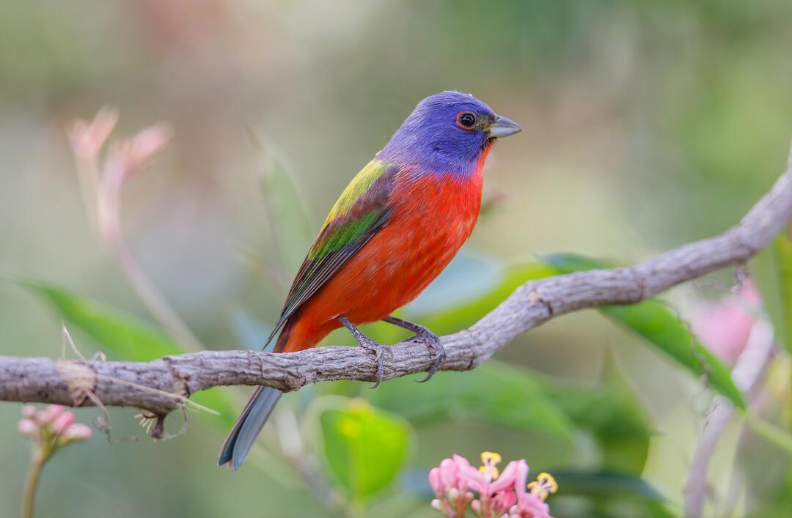
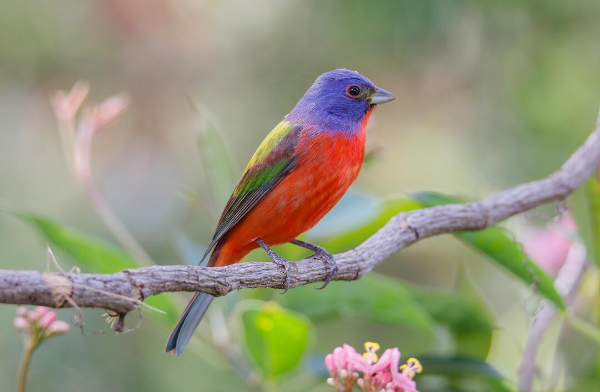
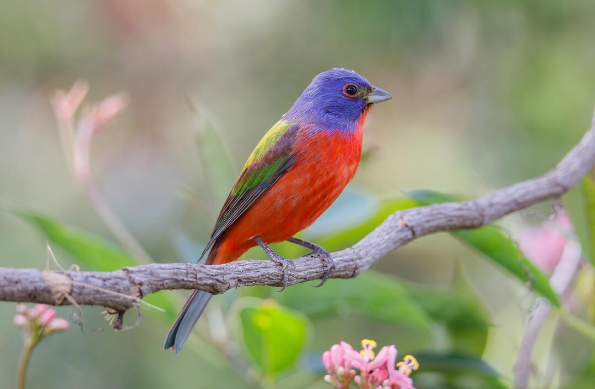
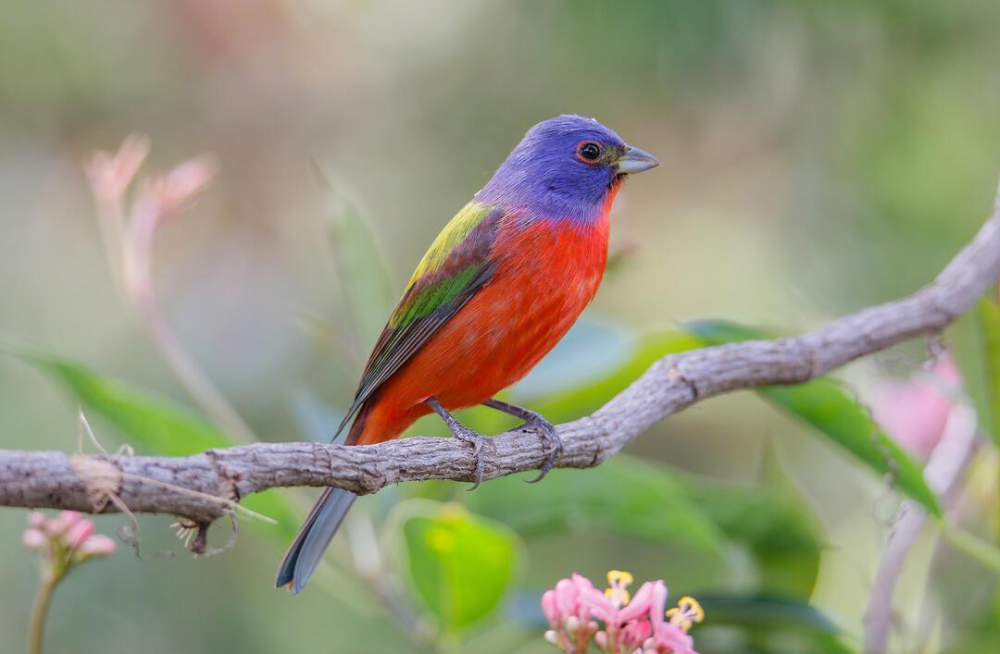

Birds are the only animals that have feathers and belong to the scientific class called Aves. A bird’s feathers are what help them fly and stay warm or cool in different climates. Birds are warm-blooded, egg-laying animals that have vertebrae, or a backbone. They are different from mammals because they lay hard-shelled eggs and have feathers. A bird has four limbs—two that are wings—along with a beak and no teeth. According to the website "Where in City," there are about 10,000 living species, or different kinds, of birds.
A bird’s beak, or bill, is different depending on the diet of the bird. If a bird is a meat eater, or raptor, such as a bald eagle, they have a sharper curved beak that is used to help tear the meat off the animal they are eating. Birds that live off the water, such as ducks and swans, have flat rounded bills, which help them root around in marshes and soft soil for plants. Birds that eat insects, such as sparrows, have short pointed beaks, which help them pull out bugs from the ground or trees.
Not all birds use their wings to fly. You might be surprised to find out that there are several that hardly use their wings for flight at all such as the otsrich, kiwi and emu. Penguins have feathers and wings and don’t use their wings to fly but to swim and navigate through the water. There are other kinds of birds that don’t use their wings to fly often or for long distances such as peacocks and roadrunners.